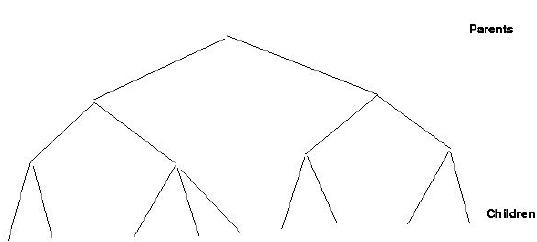
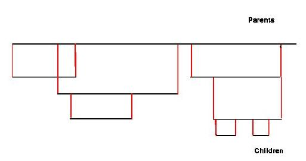
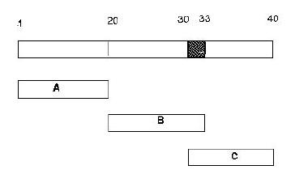
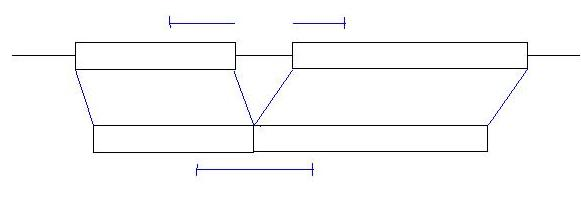
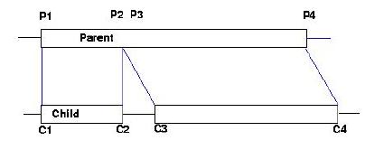
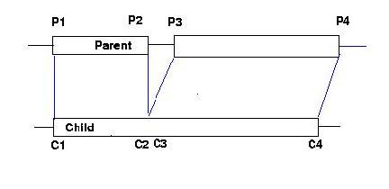
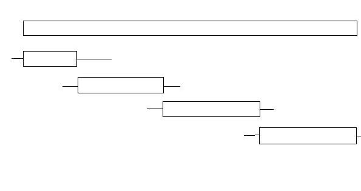

ACEDB Version 4_9
User Guide To SMap
Originally written bySimon Kelley <srk@sanger.ac.uk> and Ed Griffiths <edgrif@sanger.ac.uk>, February 2002
Background
To be written.
How it works
Smap: what does it do?
- Represents relationship between DNA sequences.
- Maps co-ordinates in one sequence on to co-ordinates in another related sequence.
- Maps co-ordinates in spliced sequences onto co-ordinates in unspliced sequences (ie removes introns.)
- Assembles long DNA sequences from short DNA sequences and manage mismatches, insertions and deletions.
The basic idea.
Database stores co-ordinate mapping from PARENTS to CHILDREN as a hierachy of objects:

SMap calculates co-ordinate mapping from CHILDREN to PARENTS.
SMap then projects DNA sequence from CHILDREN to PARENTS:

How it works at the moment.
?Sequence DNA UNIQUE ?DNA Int
Subsequence ?Sequence Int Int
Source_Exons Int Int

Subsequence A 1 20
Subsequence B 21 33
Subsequence C 30 40
Bases 11-13 in sequence "B" must match bases 1-3 in sequence "C"
The Source_Exons tag modifies the co-ords for children on this object so that introns are mapped out of the co-ordinate system:

Problems.
- Cannot build longer sequence from parts of child sequences.
- Cannot cope with mismatches when more than one child sequence has DNA for a region.
- Cannot represent insertions and deletions between child and parent sequences, apart from exons special case.
Aims for Smap.
- Be free to represent biological data in the database without needing to modify it to allow assembly into aggregate sequence objects.
- Keep information on how to modify underlying sequence objects to make aggregate objects separately from those objects.
- Allow flexibility for curators in how they store sets of features which map onto DNA sequence.
The Smap models.
?Sequence DNA UNIQUE ?DNA UNIQUE Int
S_Child Subsequence ?Sequence Int Int #SMap_info
Homol_data ?Homol_data Int Int #SMap_info
Feature_data ?Feature_data Int Int #Smap_info
.
.
.
?SMap_info Align Int UNIQUE Int UNIQUE Int
Mismatch Int UNIQUE Int
Align tag
first Int is position in parent,
second Int is position in child,
third Int is length (optional in almost all cases).
Mismatch tag
no Ints - whole sequence,
one Int - single base,
two Ints - range.
Insertions, deletions.
Insertion in child sequence.

Parent: S_Child Subsequence Child P1 P4 Align P1 C1
P3 C3
Insertions, deletions.
Deletion in child sequence.

Parent: S_Child Subsequence Child P1 P4 Align P1 C1
P3 C3
Mismatches
For each base position in the final sequence, there will exist zero or more bases in the child sequences with the "mismatch" property set, and zero or more bases in the child sequences without the "mismatch" property set.
- All "no mismatch" bases at a position must match, and they take prioriy over "mismatch" bases.
- If there are zero "no mismatch" bases at a position, but all the "mismatch" basess agree, the result is an unambiguous base code.
- If there are zero "no mismatch" bases at a position and the "mismatch" bases disagree, the result is an ambiguous IUPAC code.
Mismatches - example
Mismatch = lower case No mismatch = UPPER case Child 1 Child 2 Result A A A A C error A c A a C C a a A a c M
Source Exons are just an SMap.
Current implementation uses Source_exons tags for backwards compatibility.
Smap object need not contain DNA.
?Sequence DNA UNIQUE ?DNA UNIQUE Int
S_Child Subsequence ?Sequence Int Int #SMap_info
Homol_data ?Homol_data Int Int #SMap_info
Feature_data ?Feature_data Int Int #Smap_info
?Homol_data Homol DNA_homol ?Sequence ?Method Float Int Int Int Int
Pep_homol ?Protein ?Method Float Int Int Int Int
?Feature_data Feature ?Method Int Int Float Text
An important SMap function is calculating mappings of objects other than DNA sequence.
Applications
- Overlaps with allowed mismatches and indels in contigs.
- Build a "Golden Path"
- Map an EMBL record onto a reference sequence.
Golden Path

Path: S_Child Subsequence Child1 start1 end1 Align start1 offset1
Child2 start2 end2 Align start2 offset2
Child3 start3 end3 Align start3 offset3
Child4 start4 end4 Align start4 offset4
Representation of EMBL record.
Chromosome: S_Child Embl_data 10000 11000 Align ......
Mismatch
Embl_data: DNA .......
Homol DNA_homol seq1 method1 3.0 1 100 121 221
seq2 method2 4.0 300 340 400 440
Feature method3 500 550 6.0 "Repeat"
Summary
- Flexible method for mapping co-ordinate systems.
- Represents insertions and deletions.
- Controls sequence mismatches.
- Allows grouping of data about a DNA sequence to suit the needs of the database administrators and users.
Changes in Behaviour
This chapter briefly documents the changes in behaviour in the virtual sequence building mechanism that underlies fmap, giface, gff dumping etc., i.e. the central AceDB mechanism for composing sequences and their associated features.
This work used to be done by fMapConvert(), a monolithic and huge routine in w7/fmapcontrol.c. This routine has been replaced by a set of routines in w7/smapconvert.c which use the new Smap code from w6/smap.c.
Principle changes in behaviour
All features
The old code was forgiving but also inaccurate in that features with incorrect or missing coordinates were often mapped, but mapped inaccurately or inappropriately. These features will not now be mapped, e.g. features with coordinates partly or wholly outside that of their parents will not now be mapped.
Allele
Section from Sequence class:
Allele ?Allele XREF Sequence UNIQUE Int UNIQUE Int UNIQUE Text // start, stop, replacement sequence // if an insertion point Text is transposon name (distinguished // by containing non ACTG letters), and (n, n+1) = T A, so indicates // direction (if known). // if a deletion, put '-' as the replacement sequence
Alleles will not be mapped unless they have both start and end coordinates, as before the allele does not have to text attached to it.
Assembly_tags
Section from Sequence class:
Assembly_tags Text Int Int Text // type, start, stop, comment
Assembly_tags will not be mapped unless they have both start and end.
Oligo
Section from Sequence class:
Oligo ?Oligo XREF In_sequence Int UNIQUE Int // for OSP and human mapping mostly
fMapConvert() used to call fMapOspPositionOligo() if the Oligo had no coordinates, this routine attempted to position the oligo by matching its dna to the look->dna. It would then insert this data into the object (with the potential that it could update the database). Its also bad because it relies on having the dna, which will not always be true.
ACEDB Version 4_9
Ed Griffiths <edgrif@sanger.ac.uk> Last modified: Wed Jun 5 14:16:49 BST 2002